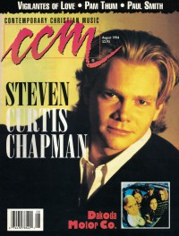
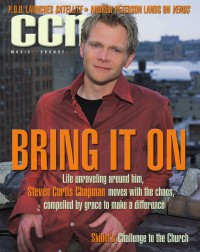
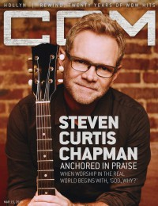
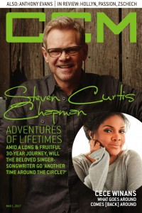

Steven Curtis Chapman
|  |
| August 1994 CCM |
 |
| October 2001 CCM |
 |
| August 2011 CCM Digital |
 |
| May 2013 CCM Digital |
 |
| 15 March 2016 CCM Digital |
 |
| 1 March 2017 CCM Digital |
Media coverage:
- 1987 in Premiere "Steven Curtis Chapman"
- 1988 in Premiere "Steven Curtis Chapman"
- 1988 in Premiere "Premiere: New Music From The New Generation", by Thomas Mann
- Jul 1988 in CCM "Campaign '88", by Steve Rabey
- Sum 1988 in YouthWorker "Tap Your Feet To These Bible Studies"
- Mar 1990 in CCM "In The News: Dove Award Nominees: Steven Curtis Chapman Grabs Ten Nominations"
- Apr 1990 in CCM "More To His Life", by Jerry Wilson
- May 1990 in CCM "In The News: Steven Curtis Chapman Wins Big at Dove Awards"
- Sep 1990 in Campus Life "Expressions: The Embarrassment of Steven Curtis Chapman", by Jim Long
- Apr 1991 in Religious Broadcasting "Interview: Steven Curtis Chapman", by Donald J Peterson
- Apr 1991 in CCM "In The News: Patti, Chapman Nominated for Six Dove Awards Each"
- Jul 1992 in CCM "Steven Curtis Chapman's Excellent Adventure", by Thom Granger
- Aug 1992 in CCM "In Concert: Grand Ole Opry House, Nashville, TN", by Thom Granger
- Nov 1992 in Campus Life "Expressions: Steven Curtis Chapman", by Jim Long
- Nov 1992 in CCM "Christian Musician: Steel Strings and a Box of Wood"
- Feb 1993 in CCM "In Concert: UCI Bren Center, Irvine, CA", by Brian B. Ruttencutter
- Apr 1993 in CCM "The CCMies [Reader's Awards]: Steven Curtis Chapman"
- Apr 1993 in CCM "In The News: Chapman, 4Him Lead Dove Nominees"
- May 1993 in CCM "In The News: Chapman Named GMA Artist of the Year", by April Hefner
- Jul 1993 in CCM
- Jul 1993 in CCM "In Concert: Roy Wilkins Auditorium, St. Paul, MN", by Doug Trouten
- 22 Nov 1993 in Christianity Today "Has Christian Rock Lost It's Soul?", by Tim Stafford
- Apr 1994 in CCM "In The News: Steven Curtis Chapman Scores Seven Dove Nominations... Again"
- May 1994 in CCM "Hog Heaven", by April Hefner, Gregory J Rumburg
- Aug 1994 in CCM "Steven Curtis Chapman's Real World", by April Hefner
- Nov 1994 in Campus Life "Expressions: The Real World of Steven Curtis Chapman", by Jim Long
- Nov 1994 in CCM "In Concert: Civic Coliseum, Knoxville, TN", by Rhonda Miskowski
- Apr 1995 in Religious Broadcasting "Steven Curtis Chapman In The Real World", by Elisabeth J Guetschow
- Apr 1995 in CCM "In The News: Chapman, Paris, Taylor Top Dove Nominee List"
- May 1995 in CCM "Integrity and Christian Music: All In The Family", by Mark A Smeby
- Jun 1995 in CCM "In The News: Chapman Takes Top Dove Nominations"
- Dec 1995 in CCM "Under The Tree", by Melissa Riddle
- Dec 1995 in Charisma "People & Events: Steven Curtis Chapman"
- Oct 1996 in CCM "Prince of Steves", by Debra Akins
- Oct 1996 in CCM "Guitar Heaven", by April Hefner
- Feb 1997 in CCM "In Concert: Civic Center Coliseum, Birmingham, AL", by Karly Randolph-Pitman
- Mar 1997 in CCM "On The Beat: Christians Take Part In Inauguration", by Debra Akins
- Sep 1997 in Campus Life "Great Expectations", by Chris Lutes
- Sep 1997 in Campus Life "The Best of SCC", by Chris Lutes
- Oct 1997 in Church Musician Today "A Kid In The Tenor Section", by Mark Cabaniss
- Nov 1997 in CCM "On The Beat: Great Adventures", by Joan Brasher
- Jan 1998 in CCM "Paducah Tragedy", by April Hefner
- May 1998 in Campus Life "So What Would Jesus Do?", by Dana Key
- Jul 1999 in CCM "Great Expectations", by Melissa Riddle
- Jul 1999 in CCM "Steven Curtis Chapman at Gospel Music Week", by Melissa Riddle
- Oct 1999 in CCM Brasil "Grandes Expectativas", by Melissa Riddle
- Feb 2000 in CCM "In Concert: Roy Williams Auditorium, St. Paul, MN", by Steve Knight
- May 2000 in CCM "Ready to Roar: Lessons For Lambs", by Melissa Riddle
- Jun 2000 in CCM "Global Impact"
- Jul 2000 in Campus Life "Our Heroes: Steven Curtis Chapman"
- Aug 2000 in CCM "Is Christian Music Making a Difference?"
- Feb 2001 in CCM "Story Behind the Song: I Will Be Here", by Christina Farris
- May 2001 in CCM "Music That Matters: Steven Curtis Chapman", by April Hefner
- Sep 2001 in New Man "Steven Curtis Chapman", by Doug Trouten
- Oct 2001 in CCM "Suffering Out Loud", by Lindy Warren
- Jan 2002 in Church Musician Today "Wrestling With Steven Curtis Chapman", by Kirk Kirkland
- Dec 2002 in CCM "Best Male Artist", by Christina Farris
- Jan 2003 in New Man "Guy Gear: Catching Up With Steven Curtis Chapman", by Bob Liparulo
- Feb 2003 in CCM "There's Just Something About Mary", by Lisa Tedder
- Nov 2003 in Today's Christian Woman "Surprised By Joy"
- Nov 2003 in CCM "Get Real: Steven's Hope", by Michael Ciani
- Jan 2004 in CCM "Listening In: Steven Curtis Chapman, Phillip Yancey"
- Oct 2004 in CCM "More To This Life", by Douglas Kaine McKelvey
- Oct 2004 in CCM "8 Is Enough (At Least For The Moment)"
- Oct 2004 in CCM "Chapman Cliff Notes"
- Nov 2004 in CCM "List-O-Rama: Saddle Up: 5 Songs That Make Me Think of Cowboys", by Chris Well
- Mar 2005 in CCM "Standing Room Only: All Things New Tour", by Andy Argyrakis
- Aug 2005 in CCM "List-O-Rama: Before They Put The Hip In Hip-Hop", by Chris Well
- Sep 2005 in Prism "Singing For Change", by Linda Owen
- Nov 2005 in Worship Leader "Table Talk: Such is the Kingdom", by Julie Reid
- Dec 2005 in CCM "Well Mercy Me, Children!", by John J. Thompson
- Jan 2008 in CCM "Faith on the Move: Count Your Change. Change A Life.", by Caroline Lusk
- Apr 2008 in CCM "Steven Curtis Chapman", by Mike Hammitt
- May 2010 in Charisma "Surprised By Grief", by Chad Bonham
- Jun 2010 in CCM Digital "Cinderella: The Enchanted Edition", by Caroline Lusk
- Aug 2011 in CCM Digital "Recreated: All Things Are Made New Again", by Caroline Lusk
- Feb 2012 in CCM Digital "Tour Spotlight: The Story Tour, Life Changers International Church, Hoffman Estates, IL", by Andy Argyrakis
- Jun 2012 in CCM Digital "Your World: Some Enchanted Evening", by Caroline Lusk
- Dec 2012 in CCM Digital "Great Expectations", by Caroline Lusk
- May 2013 in CCM Digital "Grounded: Steven Curtis Chapman's Firm Foundation", by Caroline Lusk
- Oct 2013 in CCM Digital "Gloriously Unfolded and Still Unfolding", by Caroline Lusk
- 1 Sep 2014 in CCM Digital "One Last Look: Maria's Big House of Hope Turns Five!", by Caroline Lusk
- 15 Mar 2016 in CCM Digital "Worship In The Real World", by Lindsay Williams
- 1 Mar 2017 in CCM Digital "Adventures Of Lifetimes", by Andy Argyrakis
Albums & reviews:
1987: First Hand
1992: The Great Adventure
1999: Speechless
2003: Christmas is all in the Heart
2015: Christmas Hymns
2016: Worship and Believe
2019: A Great Adventure: Live Solo Performances of Timeless Hits
2020: A Great Adventure, Live Solo Performances of Timeless Hits
2020: A Great Adventure, Live Solo Performances of Timeless Hits
- Sep 1987 in CCM, by Mark Eischer
- Nov 1987 in Group, by David Michael Ed
- Aug 1988 in CCM, by Warren Anderson
- Feb 1989 in Campus Life, by Jim Long
- Nov 1989 in CCM, by Thom Granger
- Dec 1989 in Campus Life, by Jim Long
- Jan 1991 in CCM, by Bruce A. Brown
- Feb 1991 in Campus Life, by Jim Long
- Mar 1991 in Today's Christian Woman, by Rebecca K Grosenbach
- Mar 1991 in Christian Herald, by Peter Gross
- Spr 1991 in YouthWorker, by Steve Rabey
- May 1991 in Charisma, by Marcy Gifford
- Jun 1991 in Moody, by Brian Lang
- Nov 1990 in CCM, by Kathleen A Ervin
1992: The Great Adventure
- Jul 1992 in CCM, by Bruce A. Brown
- Sep 1992 in Syndicate, by Chris Well
- Oct 1992 in Charisma, by W. Terry Whalin
- Oct 1992 in Moody, by Donna L. Hankins
- Win 1993 in YouthWorker, by Steve Rabey
- Jan 1993 in Religious Broadcasting, by Darlene A Peterson
- Win 1993 in Today's Better Life
- Jan 1994 in Campus Life
- Feb 1994 in Religious Broadcasting, by Darlene A Peterson
- Sum 1994 in YouthWorker, by Steve Rabey
- Sep 1993 in CCM, by April Hefner
- Jul 1994 in Charisma, by Doug Joseph
- Jul 1994 in CCM, by April Hefner
- Sep 1994 in Today's Christian Woman, by Camerin J Courtney
- Nov 1994 in Moody, by Anita Lustrea
- Win 1995 in YouthWorker, by Jim Petipus
- Nov 1995 in Today's Christian Woman
- Nov 1995 in CCM, by Karly Randolph-Pitman
- Dec 1995 in Charisma, by Doug Joseph
- Sep 1996 in Today's Christian Woman
- Sep 1996 in CCM, by Scott Thunder
- Oct 1996 in Religious Broadcasting, by Darlene A Peterson
- Nov 1996 in YouthWorker, by F. Dean Lancaster
- Nov 1996 in Campus Life
- Nov 1996 in Moody, by Anita Lustrea
- Dec 1997 in Aspire
1999: Speechless
- Jul 1999 in YouthWorker, by Dave Urbanski
- Jul 1999 in Campus Life
- Jul 1999 in CCM, by Dave Urbanski
- Aug 1999 in Profile, by Marcia Bartenhagen
- Sep 1999 in Today's Christian Woman
- Sep 1999 in New Man
- Sep 1999 in Charisma, by Doug Joseph
- Oct 1999 in CCM Brasil, by Dave Urbanski
- Jan 2000 in Moody, by Robert Lustrea
- Oct 2001 in CCM, by Dave Urbanski
- Jan 2002 in Today's Christian Woman
2003: Christmas is all in the Heart
- Nov 2003 in New Man, by Jonathan Heide
- Feb 2003 in Charisma, by Adrienne S Gaines
- Feb 2003 in CCM, by Anthony DeBarros
- Mar 2003 in YouthWorker, by Dave Urbanski
- Mar 2003 in Today's Christian Woman, by Corrie Cutrer
- Mar 2003 in Worship Leader, by Davin Seay
- May 2004 in YouthWorker, by Dave Urbanski
- Sep 2004 in CCM, by Christina Farris
- Nov 2004 in YouthWorker, by Dave Urbanski
- Nov 2004 in Today's Christian Woman, by Lisa Ann Cockrel
- Nov 2004 in Worship Leader
- Mar 2005 in Living With Teenagers, by Joy Fisher
- Oct 2005 in Worship Leader
- Nov 2005 in YouthWorker, by Dave Urbanski
- Dec 2005 in Charisma, by DeWayne Hamby
- Dec 2005 in CCM
- Apr 2007 in Living With Teenagers, by Joy Fisher
- Oct 2007 in Worship Leader
- Oct 2007 in CCM, by Deborah Evans Price
- Nov 2007 in YouthWorker, by Deborah Evans Price, Lindsay Williams
- Nov 2007 in New Man, by Chad Bonham
- Dec 2007 in Charisma, by Chad Bonham
- Mar 2008 in Living With Teenagers, by Joy Fisher
- Nov 2009 in Worship Leader, by Andrea Hunter
- Dec 2009 in Charisma, by Mark Weber
- Apr 2010 in Living With Teenagers, by Randy Williams
- Aug 2011 in CCM Digital, by Matt Conner
- Sep 2011 in YouthWorker, by Matt Conner
- Sep 2011 in Worship Leader, by Jeremy Armstrong
- Oct 2012 in CCM Digital, by Andy Argyrakis
- Nov 2012 in Worship Leader, by Jeremy Armstrong
- Dec 2012 in Christianity Today, by Robert Ham
- May 2012 in CCM Digital, by Andy Argyrakis
- Mar 2013 in CCM Digital, by Andy Argyrakis
- 2 Oct 2013 in Christian Century, by Lou Carlozo
- Oct 2013 in Charisma, by DeWayne Hamby
- Oct 2013 in Worship Leader, by Mike Pueschell
- Nov 2013 in CCM Digital, by Andy Argyrakis
2015: Christmas Hymns
2016: Worship and Believe
- Jan 2016 in Worship Leader, by Jeremy Armstrong
- 1 Mar 2016 in CCM Digital, by Matt Conner
- Apr 2016 in Charisma, by Taylor Berglund
2019: A Great Adventure: Live Solo Performances of Timeless Hits
2020: A Great Adventure, Live Solo Performances of Timeless Hits
2020: A Great Adventure, Live Solo Performances of Timeless Hits
Award Summary (Nominations / Wins)
Dove Awards- 1988 Dove Awards
- Contemporary Album: First Hand
- Songwriter
- Contemporary Album: Real Life Conversations
- Contemporary Recorded Song: "His Eyes"
- Song
- Songwriter
- Male Vocalist
- Artist
- Inspirational Recorded Song: "His Strength Is Perfect"
- Inspirational Recorded Song
- Contemporary Album: More To This Life
- Contemporary Recorded Song
- Song: "I Will Be Here"
- Songwriter
- Male Vocalist
- Artist
- Musical Album: Live at the Palace
- Contemporary Recorded Song: "I Will Be Here"
- Song: "For the Sake of the Call"
- Songwriter
- Male Vocalist
- Contemporary Album: For The Sake of the Call
- Contemporary Recorded Song: "For the Sake of the Call"
- Song: "The Great Adventure"
- Songwriter
- Male Vocalist
- Artist
- Short Form Music Video: "The Great Adventure"
- Contemporary Album: The Great Adventure
- Contemporary Recorded Song: "The Great Adventure"
- Song: "Go There With You"
- Songwriter
- Male Vocalist
- Artist
- Long Form Music Video: The Live Adventure [video]
- Contemporary Album: The Live Adventure
- Contemporary Recorded Song: "Go There With You"
- Song: "Heaven In The Real World"
- Songwriter
- Male Vocalist
- Artist
- Recorded Music Packaging: Heaven In the Real World
- Contemporary Album: Heaven In the Real World
- Contemporary Recorded Song: "Heaven In The Real World"
- Songwriter
- Male Vocalist
- Artist
- Song: "Lord Of The Dance"
- Songwriter
- Male Vocalist
- Pop/Contemporary Album: Signs of Life
- Artist
- Short Form Music Video: "Lord Of The Dance"
- Pop/Contemporary Recorded Song: "Lord of the Dance"
- Song: "Let Us Pray"
- Song: "Free"
- Songwriter
- Male Vocalist
- Artist
- Long Form Music Video: The Walk [video]
- Pop/Contemporary Recorded Song: "Let Us Pray"
- Male Vocalist
- Song: "Dive"
- Male Vocalist
- Pop/Contemporary Album: Speechless
- Artist
- Recorded Music Packaging: Speechless
- Inspirational Recorded Song: "Be Still And Know"
- Pop/Contemporary Recorded Song: "Dive"
- Song: "Dive"
- Male Vocalist
- Artist
- Song: "Live Out Loud"
- Song: "God Is God"
- Male Vocalist
- Pop/Contemporary Album: Declaration
- Artist
- Pop/Contemporary Recorded Song: "Live Out Loud"
- Male Vocalist
- Artist
- Song: "All About Love"
- Male Vocalist
- Pop/Contemporary Album: All About Love
- Long Form Music Video: Steven Curtis Chapman Live [video]
- Pop/Contemporary Album: All Things New
- Song: "Voice Of Truth"
- Inspirational Recorded Song: "By His Wounds"
- Song: "You Reign"
- Song: "Cinderella"
- Songwriter
- Artist
- Pop/Contemporary Recorded Song: "Cinderella"
- Male Vocalist
- Recorded Music Packaging: Joy
- Bluegrass Album: Deep Roots
- Christmas Album: Joy
- Bluegrass/Country/Roots Album: Deeper Roots: Where The Bluegrass Grows
- Bluegrass/Country/Roots Recorded Song: "Dive (feat. Ricky Skaggs)"
- Long Form Music Video: A Great Adventure, Live Solo Performances of Timeless Hits
- Inspirational Recorded Song: "He Touched Me/There's Something About That Name/Because He Lives-Medley"
- Bluegrass/Country/Roots Album: A Great Adventure, Live Solo Performances of Timeless Hits
- 1991 Grammy Awards
- Best Pop Gospel Album: For The Sake of the Call
- Best Pop Gospel Album: The Great Adventure
- Best Pop/Contemporary Gospel Album: The Live Adventure
- Best Pop/Contemporary Gospel Album: Speechless
- Best Pop/Contemporary Gospel Album: Declaration
- Best Pop/Contemporary Gospel Album: All Things New
- Best Pop/Contemporary Gospel Album: All I Really Want For Christmas
- Best Pop/Contemporary Gospel Album: This Moment
- Best Pop/Contemporary Gospel Album: Beauty Will Rise
- Best Gospel/Contemporary Christian Music: "Do Everything"
- Best Contemporary Christian Music Song: "Love Take Me Over"
- Best Roots Gospel Album: Deeper Roots: Where The Bluegrass Grows
- 1994 Billboard Music Video Awards
- Best Clip, Contemporary Christian: "Heaven In The Real World"
- Best Clip, Contemporary Christian: "Lord Of The Dance"
Books about Steven Curtis Chapman
- "Thunderbolts and Lightning: The Writing of Music for God" in Soul2Soul (Christopher L Coppernoll, 1998)
- "Life Is A Dance" in Soul2Soul (Christopher L Coppernoll, 1998)
- "Steven Curtis Chapman" in The Encyclopedia of Contemporary Christian Music (Mark Allan Powell, 2002)
- "Testimonies: Interviews With Christian Artists" in The Billboard Guide to Contemporary Christian Music (Barry Alfonso, 2002)
- "Steven Curtis Chapman" in The Billboard Guide to Contemporary Christian Music (Barry Alfonso, 2002)
Published articles:
© 2011 CMnexus. Last updated April 2021. Contact: editor -AT- cmnexus -DØT- org About